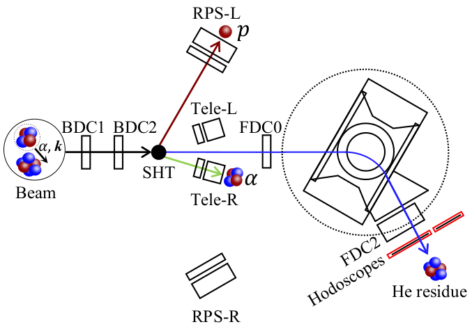
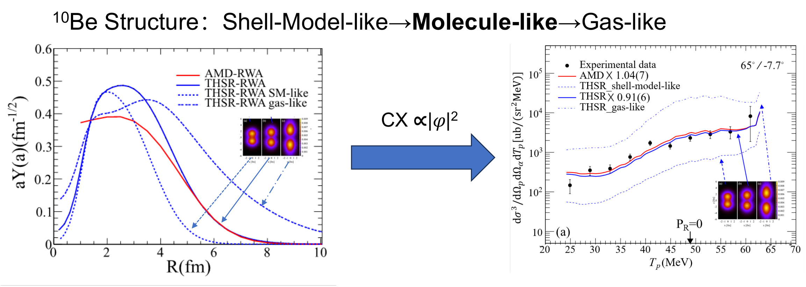

"Now experiments by Pengjie Li and his colleagues provide the clearest evidence to date that nuclei can 'clusterize' even in their ground states."
— David Ehrenstein, Physics 16, s167 (2023)
Knocking out an α particle
¹⁰Be is the simplest neutron-rich benchmark for testing modern theories of α clustering and cluster evolution. To directly probe the internal arrangement of ¹⁰Be, we sent a beam of the isotope at 150 MeV/u into a solid hydrogen target at the SAMURAI spectrometer (RIKEN-RIBF, Japan). Hydrogen nuclei (protons) struck the incoming ¹⁰Be nuclei and "knocked out" α particles. By detecting all three products of each interaction — the recoil proton, the ejected α, and the remaining ⁶He fragment — we could reconstruct the reaction kinematics and extract the triple-differential cross section. As part of the SAMURAI12 experiment, this measurement was carried out by a large international collaboration of 28 institutions worldwide, including the RIKEN Nishina Center (Japan), IJCLab (Orsay, France), the University of Hong Kong (China), and the Institute of Modern Physics, Chinese Academy of Sciences (Lanzhou, China).

The key insight is that the knockout cross section is proportional to |ψ|² — the square of the α-cluster wave function in the initial state. This means the spectral shape of the measured cross section directly reflects the spatial distribution of α clusters inside ¹⁰Be. No model-dependent unfolding is required: the data speak for themselves.
A diatomic molecule, inside a nucleus
We extracted the triple-differential cross section for the ground-state transition across a range of quasifree angle pairs (θp, θα). The results were compared with state-of-the-art DWIA calculations provided by our theoretical collaborators, Kazuyuki Ogata (Kyushu University) and Kazuki Yoshida (Osaka University), using two independent frameworks: the Tohsaki–Horiuchi–Schuck–Röpke (THSR) cluster-model wave function provided by Mengjiao Lyu (NUAA), and wave functions deduced from antisymmetrized molecular dynamics (AMD) formulated by Yoshiko Kanada-En'yo (Kyoto University). These comparisons between data and calculation are best understood as chapters in an ongoing conversation with the theorists who help shape our interpretation of clustering.

The agreement between calculated and measured cross sections is remarkable in both shape and magnitude. The data unambiguously validate the molecular-structure description:
"The team showed that the ground state of beryllium-10 is analogous to a diatomic molecule, with two alpha particles acting like atoms and two neutrons orbiting like a pair of electrons forming a covalent bond."
— David Ehrenstein, Physics 16, s167 (2023)
In this picture, the two α clusters form the "atomic cores" while the two valence neutrons occupy π-type molecular orbitals that bind them together — exactly as electrons hold atoms together in a conventional molecule. Alternative descriptions (compact shell-model-like or loosely bound gas-like structures) produce cross-section shapes that are decisively inconsistent with our measurements.
Impact & recognition
This work provides the first direct quantitative measurement of α-cluster wave functions in a nuclear ground state using quasi-free knockout in inverse kinematics. It establishes (p,pα) reaction as a sensitive probe for cluster structure and opens a path toward systematic studies of clustering in exotic nuclei far from stability — including candidates near the neutron dripline where molecular orbitals may govern binding itself.
The result was published in Physical Review Letters and was selected in APS Physics as “Featured in Physics”, recognizing its significance for the understanding of clustering phenomena in atomic nuclei. Since its publication, the work has been cited 39 times according to INSPIRE HEP as of July 2026.
Beyond the scientific community, the discovery has also reached a broader audience through science outreach activities, including a popular-science video on Bilibili with nearly one million views.